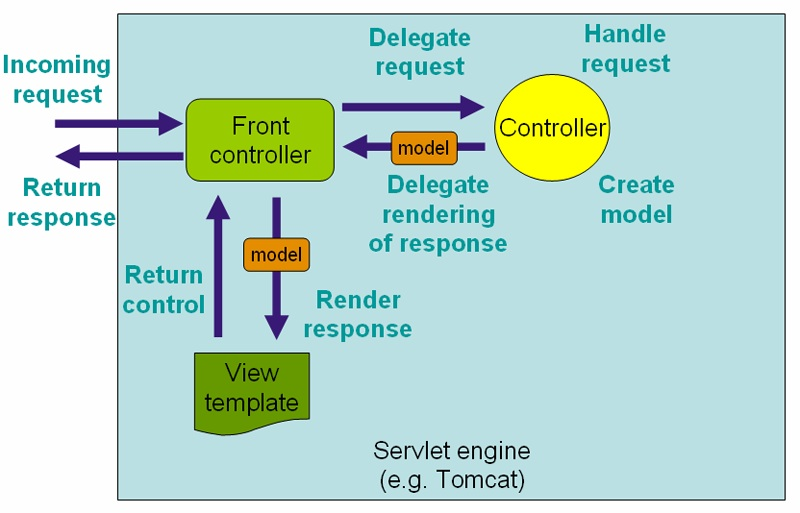

Introducción a MVC en Spring
En este tema se hará una introducción a las características del framework modelo-vista-controlador que incorpora Spring. Veremos que tiene una completa y bien pensada arquitectura, altamente configurable, que a primera vista lo hace parecer bastante complejo, siendo aún así fácil de usar en los casos más frecuentes.
En esta primera sesión dedicada a Spring MVC veremos aplicaciones web del tipo que podríamos llamar "clásico" o "pre-web 2.0". Es decir, aplicaciones en las que cuando el usuario rellena un formulario y se envían los datos al servidor se produce un salto a otra página o una recarga de la misma. Actualmente es mucho más común el uso de aplicaciones AJAX en las que la comunicación con el servidor es más transparente para el usuario y no implica normalmente cambios de página. Veremos cómo trabajar con AJAX en Spring en sesiones posteriores.
Procesamiento de una petición en Spring MVC
A continuación se describe el flujo de procesamiento típico para una petición HTTP en Spring MVC. Esta explicación está simplificada y no tiene en cuenta ciertos elementos que comentaremos posteriormente. Spring es una implementación del patrón de diseño "front controller", que también implementan otros frameworks MVC, como por ejemplo, el clásico Struts.

- Todas las peticiones HTTP se canalizan a través del front controller. En casi todos los frameworks MVC que siguen este patrón, el front controller no es más que un servlet cuya implementación es propia del framework. En el caso de Spring, la clase DispatcherServlet.
- El front controller averigua, normalmente a partir de la URL, a qué Controller hay que llamar para servir la petición. Para esto se usa un HandlerMapping.
- Se llama al Controller, que ejecuta la lógica de negocio, obtiene los resultados y los devuelve al servlet, encapsulados en un objeto del tipo Model. Además se devolverá el nombre lógico de la vista a mostrar (normalmente devolviendo un String, como en JSF).
- Un ViewResolver se encarga de averiguar el nombre físico de la vista que se corresponde con el nombre lógico del paso anterior.
- Finalmente, el front controller (el DispatcherServlet) redirige la petición hacia la vista, que muestra los resultados de la operación realizada.
En realidad, el procesamiento es más complejo. Nos hemos saltado algunos pasos en aras de una mayor claridad. Por ejemplo, en Spring se pueden usar interceptores, que son como los filtros del API de servlets, pero adaptados a Spring MVC. Estos interceptores pueden pre y postprocesar la petición alrededor de la ejecución del Controller. No obstante, todas estas cuestiones deben quedar por fuerza fuera de una breve introduccion a Spring MVC como la de estas páginas.
Configuración básica
Lo habitual es que se configure la aplicación web de manera que todas las peticiones cuya URL sigue un determinado patrón pasen a través de Spring MVC. Así, por ejemplo, podemos "redirigir" a través de Spring MVC todas las peticiones que acaben en ".do". Esto nos permite por ejemplo servir los recursos estáticos aparte, ya que no es necesario que estos pasen por el flujo de ejecución MVC.
Necesitaremos configurar el web.xml para que todas las peticiones HTTP con un determinado patrón se canalicen a través del mismo servlet, en este caso de la clase DispatcherServlet de Spring. Como mínimo necesitaremos incluir algo como esto:
<servlet>
<servlet-name>dispatcher</servlet-name>
<servlet-class>
org.springframework.web.servlet.DispatcherServlet
</servlet-class>
<load-on-startup>1</load-on-startup>
</servlet>
<servlet-mapping>
<servlet-name>dispatcher</servlet-name>
<url-pattern>*.do</url-pattern>
</servlet-mapping>
Con esta configuración, todas las peticiones acabadas en .do, como getPedido.do o verClientes.do, se redirigirían al servlet de Spring.
Para aumentar la modularidad de la aplicación, se pueden configurar la capa web en un XML distinto al resto de la aplicación. Al arrancar, Spring buscará automáticamente un fichero con el mismo nombre del servlet que hace de dispatcher, seguido de la terminación -servlet.xml. La búsqueda se hace en el directorio WEB-INF. En nuestro caso, el fichero buscado automáticamente sería dispatcher-servlet.xml.
Por tanto, la forma habitual de trabajar es usar un XML para los beans de la capa web y otro (u otros) distinto para los de la capa de negocio y DAOs. Spring establece una jerarquía de contextos de modo que en el XML de la capa web se heredan automáticamente los otros beans, lo que nos permite referenciar los objetos de negocio en nuestro código MVC.
Suponiendo que nuestros componentes web están implementados en el paquete es.ua.jtech.spring.mvc, en el dispatcher-servlet.xml aparecería:
<?xml version="1.0" encoding="UTF-8"?>
<beans xmlns="http://www.springframework.org/schema/beans"
xmlns:xsi="http://www.w3.org/2001/XMLSchema-instance"
xmlns:context="http://www.springframework.org/schema/context"
xmlns:mvc="http://www.springframework.org/schema/mvc"
xsi:schemaLocation="http://www.springframework.org/schema/beans
http://www.springframework.org/schema/beans/spring-beans.xsd
http://www.springframework.org/schema/context
http://www.springframework.org/schema/context/spring-context.xsd
http://www.springframework.org/schema/mvc
http://www.springframework.org/schema/mvc/spring-mvc.xsd">
...
<context:component-scan base-package="es.ua.jtech.spring.mvc"/>
<mvc:annotation-driven/>
...
</beans>
La etiqueta <mvc:annotation-driven/> permite usar anotaciones y hace una configuración por defecto de distintos elementos que iremos viendo, como la validación y conversión de datos. Está disponible a partir de la versión 3.0 de Spring
Caso 1: petición sin procesamiento de datos de entrada
La elaborada arquitectura de Spring MVC, y las muchas posibilidades que tiene el usuario de configurar a su medida el procesamiento que hace el framework hacen que sea poco intuitivo hacer una descripción general de Spring MVC, al menos si no se dispone del suficiente tiempo para hacerlo de manera pausada, lo que no es el caso. En su lugar, hemos preferido aquí describir cómo se implementarían un par de casos típicos en una aplicación web, indicando cómo implementar cada caso y las posibilidades adicionales que ofrece Spring MVC. El lector tendrá que consultar fuentes adicionales para ver con detalle el resto de opciones.
El primer caso sería el de una petición que no necesita interacción por parte del usuario en el sentido de proceso de datos de entrada: por ejemplo sacar un listado de clientes, mostrar los datos de un pedido, etc. La "no interacción" aquí se entiende como que no hay que procesar y validar datos de entrada. Es decir, que no hay un formulario HTML. Esto no quiere decir que no haya parámetros HTTP, pero entonces suelen estar fijos en la URL de un enlace o de modo similar, no introducidos directamente por el usuario. Estas peticiones suelen ser simplemente listados de información de "solo lectura".
Vamos a poner estos ejemplos en el contexto de una hipotética aplicación web para un hotel, en la cual se pueden ver y buscar ofertas de habitaciones, disponibles con un determinado precio hasta una fecha límite. Aquí tendríamos lo que define a una oferta:
package es.ua.jtech.spring.dominio;
import java.math.BigDecimal;
import java.util.Date;
public class Oferta {
private BigDecimal precio;
private Date fechaLimite;
private TipoHabitacion tipoHab;
private int minNoches;
//..aquí vendrían los getters y setters
}
TipoHabitación es un tipo enumerado que puede ser individual o doble.
Lo primero es definir el controlador, que será una clase java convencional. Con anotaciones le indicamos a Spring qué métodos procesarán las peticiones y cómo enlazar sus parámetros con los parámetros HTTP.
Definir el controller y asociarlo con una URL
Supongamos que queremos sacar un listado de ofertas del mes. Así, el esqueleto básico de nuestro Controller sería:
import es.ua.jtech.spring.negocio.IGestorOfertas;
@Controller
@RequestMapping("/listaOfertas.do")
public class ListaOfertasController {
@Autowired
private IGestorOfertas miGestor;
...
}
La anotación @Controller indica que la clase es un bean controlador y nos ahorra el trabajo de definir en XML el bean correspondiente. Con @RequestMapping asociamos una URL a este controlador.
Por supuesto, cualquier Controller necesitará para hacer su trabajo de la colaboración de uno o más objetos de negocio. Lo lógico es que estos objetos sean beans de Spring y que instanciemos las dependencias haciendo uso del contenedor. En nuestro caso dicho objeto es "miGestor". Supondremos que él es el que "sabe" sacar las ofertas del mes con el método public List<Oferta> getOfertasDelMes(int mes). Probablemente a su vez este gestor deba ayudarse de un DAO para hacer su trabajo, pero esto no nos interesa aquí.
Por tanto, hemos usado @Autowired para resolver dependencias por tipo, suponiendo para simplificar que no hay ambigüedad (solo existe una clase que implemente IGestorOfertas)
Para que Spring sepa qué método del controlador debe procesar la petición HTTP se puede usar de nuevo la anotación @RequestMapping. Podemos especificar qué método HTTP (GET, POST,...) asociaremos al método java.
@Controller
@RequestMapping("/listaOfertas.do")
public class ListaOfertasController {
@Autowired
private GestorOfertas miGestor;
@RequestMapping(method=RequestMethod.GET)
public String procesar(HttpServletRequest req) {
int mes = Integer.parseInt(req.getParameter("mes"));
...
}
}
Aquí estamos asociando una llamada a "listaOfertas.do" de tipo GET con el método java procesar. Una llamada a la misma URL con POST produciría un error HTTP de tipo 404 ya que no habría nada asociado a dicha petición. Si no necesitamos tanto control sobre el método HTTP asociado podemos poner la anotación @RequestMapping("/listaOfertas.do") directamente en el método procesar en lugar de en la clase.
Leer parámetros HTTP
La primera tarea que debe hacer un método de procesamiento de una petición es leer el valor de los parámetros HTTP. Spring automáticamente detectará que procesar tiene un argumento de tipo HttpServletRequest y lo asociará a la petición actual. Esta "magia" funciona también con otros tipos de datos: por ejemplo, un parámetro de tipo Writer se asociará automáticamente a la respuesta HTTP y uno de tipo Locale al locale de la petición. Consultar la documentación de Spring para ver más detalladamente las asociaciones que se realizan automáticamente.
Otra posibilidad es asociar explícitamente parámetros HTTP con parámetros java mediante la anotación @RequestParam. Usando esta anotación, el ejemplo quedaría:
@Controller
@RequestMapping("/listaOfertas.do")
public class ListaOfertasController {
@Autowired
private IGestorOfertas miGestor;
@RequestMapping(method=RequestMethod.GET)
public String procesar(@RequestParam("mes") int mes) {
...
}
}
De este modo Spring hace por nosotros el trabajo de extraer el parámetro y convertir el tipo de String a int. Hay que tener en cuenta que esta forma de trabajar puede generar múltiples excepciones. Si el parámetro no está presente en la petición HTTP se producirá una excepción de tipo MissingServletRequestParameterException. Si está presente y no se puede convertir se generará una TypeMismatchException. Para especificar que el parámetro no es obligatorio, podemos hacer:
public String procesar(@RequestParam(value="mes",required=false) int mes) {
...
}
En este caso, se recomienda usar un Integer en lugar de un int para que si no existe el parámetro Spring nos pueda pasar el valor null (si no existe Spring no lo interpreta como 0).
Aunque en el ejemplo anterior hemos tenido que vincular el parámetro HTTP con el del método del controller de manera explícita, en Spring esta vinculación se hace muchas veces de modo automático. Por ejemplo si un método del controller tuviera un parámetro de tipo HttpRequest Spring lo asociaría automáticamente con el HttpRequest actual. Así, podríamos hacer algo como:
public String procesar(HttpRequest peticion) {
int mes = Integer.parseInt(peticion.getParameter("mes");
...
}
Esta vinculación automática funciona con objetos de varios tipos: HttpRequest, HttpResponse, HttpSession,... Se recomienda consultar la documentación de Spring para más detalle (sección 15.3.2.3)
Una vez leídos los parámetros, lo siguiente suele ser disparar la lógica de negocio y colocar los resultados en algún ámbito al que pueda acceder la vista. Spring ofrece algunas clases auxiliares para almacenar de manera conveniente los datos obtenidos. En realidad son simplemente Map gracias a los que se puede almacenar un conjunto de objetos dispares, cada uno con su nombre. Spring hace accesible el modelo a la vista como un atributo de la petición y al controlador si le pasamos un parámetro de tipo ModelMap. Aquí tenemos la lógica de procesar:
@RequestMapping(method=RequestMethod.GET)
public String procesar(@RequestParam("mes") int mes,
ModelMap modelo) {
modelo.addAttribute("ofertas", miGestor.getOfertasDelMes(mes));
return "listaOfertas";
}
Mostrar la vista
Finalmente, nos queda especificar qué vista hemos de mostrar. Hemos estado viendo en todos los ejemplos que el método procesar devuelve un String. Dicho String se interpreta como el nombre "lógico" de la vista a mostrar tras ejecutar el controlador. En el JSP será sencillo mostrar los datos ya que, como hemos dicho, se guardan en un atributo de la petición:
<%@taglib uri="http://java.sun.com/jsp/jstl/core"prefix="c"%>
...
<c:forEach items="${ofertas}" var="o">
Habitación ${o.tipoHab} un mínimo de
${o.minNoches} noches por solo ${o.precio}eur./noche
</c:forEach>
...
Queda pendiente cómo se resuelve el nombre lógico de la vista, es decir, cómo sabe Spring a qué archivo corresponde en realidad el nombre lógico. Para ello necesitamos un ViewResolver. Debemos definir un bean en el XML con el id=viewResolver y la implementación de ViewResolver que nos interese. De las que proporciona Spring una de las más sencillas de usar es InternalResourceViewResolver. Esta clase usa dos parámetros básicos: prefix y suffix, que puestos respectivamente delante y detrás del nombre lógico de la vista nos dan el nombre físico. Ambos son opcionales. Por ejemplo:
<bean id="viewResolver"
class="org.springframework.web.servlet.view.InternalResourceViewResolver">
<property name="prefix" value="/jsp/"/>
<property name="suffix" value=".jsp"/>
</bean>
Así, si el nombre lógico de la vista de nuestro ejemplo era ofertas, se acabaría buscando el recurso físico /jsp/ofertas.jsp.
En algunos casos, en lugar de mostrar una vista, lo adecuado es ejecutar una operación MVC. Por ejemplo, tras dar de alta una oferta podría ser adecuado mostrar el listado de ofertas, y probablemente ya tengamos un controller que se ocupe de esto. Para ello podemos usar el prefijo "redirect:". Así, tras insertar una nueva oferta en el controller podríamos hacer algo como
return "redirect:/listarOfertas.do"
Para saltar al listado de ofertas, suponiendo que esa URL esté asociada con la operación correspondiente.
Caso 2: procesamiento de un formulario
Este caso es más complejo ya que implica varios pasos:
- El usuario introduce los datos, normalmente a través de un formulario HTML
- Los datos se validan, y en caso de no ser correctos se vuelve a mostrar el formulario para que el usuario pueda corregirlos.
- En caso de pasar la validación, los datos se "empaquetan" en un objeto Java para que el controller pueda acceder a ellos de modo más sencillo que a través de la petición HTTP.
- El controller se ejecuta, toma los datos, realiza la tarea y cede el control para que se muestre la vista.
En Spring la práctica habitual es mostrar el formulario y procesar los datos dentro del mismo controlador, aunque podríamos hacerlo en controladores distintos.
Javabean para almacenar los datos de entrada
En Spring se suele usar un objeto para almacenar los datos que el usuario teclea en el formulario. Habitualmente habrá una correspondencia uno a uno entre las propiedades del objeto (accesibles con getters/setters) y los campos del formulario. Por ejemplo, este podría ser un objeto apropiado para buscar ofertas. Solo contiene los campos estrictamente necesarios para la búsqueda, no todos los datos que puede contener una oferta:
package es.ua.jtech.spring.mvc;
import es.ua.jtech.spring.dominio.TipoHabitacion;
public class BusquedaOfertas {
private int precioMax;
private TipoHabitacion tipoHab;
//..ahora vendrían los getters y setters
}
El controller
Desde el punto de vista de lo que tenemos que implementar, este caso solo se diferenciará del caso 1 (sin procesamiento de datos de entrada) en el controller y en que para la vista podemos usar tags de Spring, para que se conserve el valor de los campos y el usuario no tenga que volver a escribirlo todo si hay un error de validación. La asociación entre la URL y el controlador y entre la vista lógica y el recurso físico serán igual que antes. Además, por supuesto, tendremos que implementar la validación de datos. Por el momento vamos a hacer la validación de manera manual y dejaremos para la sesión siguiente las facilidades de validación que nos ofrece Spring, para no distraernos.
Mediante la anotación @RequestMapping mapearemos la petición que muestra el formulario a un método java (será con GET) y la que lo procesa a otro distinto (POST):
...
@Controller
@RequestMapping("/busquedaOfertas.do")
public class BusquedaOfertasController {
@Autowired
private GestorOfertas miGestor;
@RequestMapping(method=RequestMethod.GET)
public String preparaForm(Model modelo) {
...
}
@RequestMapping(method=RequestMethod.POST)
public String procesaForm(BusquedaOfertas bo) {
...
}
}
Como ya hemos dicho, los datos del formulario se van a almacenar en un objeto de tipo BusquedaOferta. El método preparaForm, que se ejecutará antes de mostrar el formulario, debe crear un BusquedaOferta con los valores por defecto y colocarlo en el modelo para que puedan salir en el formulario. El modelo no es más que un "almacén" de objetos al que tiene acceso tanto la vista como los controllers. Está representado en Spring por el interfaz Model, y se le añaden objetos con el método addAttribute (más o menos como el request estándar del API de servlets). Finalmente, se devolverá el nombre lógico de la vista que contiene el formulario, que en nuestro caso representa a la página "busquedaOfertas.jsp". Aquí tenemos el código:
@RequestMapping(method=RequestMethod.GET)
public String preparaForm(Model modelo) {
modelo.addAttribute("bo", new BusquedaOfertas());
return "busquedaOfertas";
}
La vista con las taglibs de Spring
En la página busquedaOfertas.jsp colocaremos un formulario usando las taglibs de Spring. Estas etiquetas nos permiten vincular el modelo al formulario de forma sencilla y además mostrar los errores de validación como veremos posteriormente.
<%@ taglib prefix="form" uri="http://www.springframework.org/tags/form" %>
<html>
<head>
<title>Esto es busquedaOfertas.jsp</title>
</head>
<body>
<form:form modelAttribute="bo">
<form:input path="precioMax"/> <br/>
<form:select path="tipoHab">
<form:option value="individual"/>
<form:option value="doble"/>
</form:select>
<input type="submit" value="buscar"/>
</form:form>
</body>
</html>
Obsérvense varios puntos interesantes:
- La vinculación entre el objeto BusquedaOfertas del modelo y los datos del formulario se hace dándole un nombre al objeto al añadirlo al modelo y usando este mismo nombre en el atributo modelAttribute de la etiqueta "form".
- Las etiquetas de Spring para formularios son muy similares a su contrapartida HTML. El atributo path de cada una indica la propiedad de BusquedaOfertas a la que están asociadas.
- El botón de enviar del formulario no necesita usar ninguna etiqueta propia de Spring, es HTML convencional
- El formulario no tiene "action" ya que llamará a la misma página. Implícitamente Spring lo convierte en un formulario con action vacío y método POST.
Llegados a este punto, el usuario rellena el formulario, lo envía y nosotros debemos procesarlo. Esto lo hace el controlador en el método procesaForm. Veamos su código, por el momento sin validación:
@RequestMapping(method=RequestMethod.POST)
public String procesaForm(BusquedaOfertas bo, Model modelo) {
//buscamos las ofertas deseadas
modelo.addAttribute("ofertas", miGestor.BuscaOfertas(bo));
//y saltamos a la vista que muestra los resultados
return "listaOfertas";
}
Antes de ejecutar este método Spring habrá tomado los datos del formulario y creado un BusquedaOferta con ellos. Spring vincula automáticamente este bean con el parámetro del mismo tipo del método procesaForm. Podemos hacer explícita esta vinculación con la anotación @ModelAttribute en el parámetro. Esto podría ser necesario si tenemos más de un parámetro del mismo tipo
Validación de los datos
Por supuesto, el ejemplo anterior no es demasiado correcto, ya que antes de disparar la lógica de negocio tendríamos que validar los datos. El código con validación sería algo como:
@RequestMapping(method=RequestMethod.POST)
public String procesaForm(@ModelAttribute("bo") BusquedaOfertas bo,
BindingResult result,
Model modelo) {
//El precio no puede ser negativo
if (bo.getPrecioMax()<0)
result.rejectValue("precioMax", "precNoVal");
//si Spring o nosotros hemos detectado error, volvemos al formulario
if (result.hasErrors()) {
return "busquedaOfertas";
}
//si no, realizamos la operación
modelo.addAttribute("ofertas", miGestor.BuscaOfertas(bo));
//y saltamos a la vista que muestra los resultados
return "listaOfertas";
}
Cuando se llama al procesaForm Spring ya habrá hecho una pre-validación comprobando que los datos son del tipo adecuado para encajar en un BusquedaOfertas: por ejemplo, que el precio es convertible a int. El resultado de esta "pre-validación" es accesible a través del segundo parámetro. De nuevo, tenemos una vinculación automática entre un parámetro e información del contexto: el parámetro de tipo BindingResult y el resultado de la validación. Condición indispensable es que este parámetro venga justo después del bean que estamos validando. La clase BindingResult tiene métodos para averiguar qué errores se han producido, y como ahora veremos, añadir nuevos.
Nuestra lógica de negocio puede tener requerimientos adicionales a la mera conversión de tipos. Por ejemplo, en nuestro caso está claro que un precio no puede ser un valor negativo. Por tanto, lo comprobamos y si es negativo usamos el método rejectValue para informar de que hay un nuevo error. Este método tiene dos parámetros: el nombre de la propiedad asociada al error y la clave del mensaje de error. El mensaje estará guardado en un fichero properties bajo esa clave. Si hay errores retornamos a la vista del formulario. Si no, disparamos la lógica de negocio, obtenemos los resultados, los añadimos al modelo y saltamos a la vista que los muestra.
Los mensajes de error
Para que en el JSP aparezcan los mensajes, usaremos la etiqueta <form:errors/> de Spring. Por ejemplo, supongamos que al lado del precio queremos mostrar sus posibles errores
<%@ taglib prefix="form" uri="http://www.springframework.org/tags/form" %>
<html>
<head>
<title>Esto es busquedaOfertas.jsp</title>
</head>
<body>
<form:form modelAttribute="bo">
<form:input path="precioMax"/>
<form:errors path="precioMax" cssClass="rojo"/>
...
Con el atributo path decimos el campo para el que queremos mostrar los errores. El atributo cssClass hace que el texto del error venga "envuelto" en un <span class="rojo">, útil para hacer que el error aparezca con un estilo especial.
El texto de los mensajes de error no se define en código java, para que sea más sencillo modificarlos y no sea necesario recompilar el código. Se definen en ficheros .properties. En el dispatcher-servlet.xml debemos definir un bean de Spring que representa al archivo de mensajes. Se suele usar la clase ResourceBundleMessageSource. El id del bean debe ser messageSource
<bean id="messageSource"
class="org.springframework.context.support.ResourceBundleMessageSource">
<property name="basename" value="es/ua/jtech/spring/mvc/mensajesWeb"/>
</bean>
Y aquí tenemos el archivo mensajesWeb.properties (que, como indicaba la propiedad "basename", está colocado dentro del paquete es.ua.jtech.spring.mvc):
precNoVal = precio no válido typeMismatch.precioMax = el precio no es un número
Las claves a las que se asocian los mensajes en este fichero pueden ser propias (como el caso de precNoVal, que hemos definido en la llamada a rejectValue del apartado anterior) o bien seguir una convención propia de Spring. Por ejemplo, typeMismatch se asocia por defecto a los errores de conversión de tipos, de modo que si introdujéramos un valor no convertible a entero, se mostraría este error. Iniicialmente Spring probaría a encontrar una clave de typeMismatch específica para el campo precioMax, que es la que tenemos. Si no se encontrara esta, se buscaría solamente typeMismatch y si ni siquiera estuviera esta se mostraría un mensaje de error por defecto (por supuesto en inglés). Se recomienda consultar la documentación de la clase DefaultMessageCodesResolver , que es la encargada de buscar las claves apropiadas por orden.
Validación fuera del controller
Evidentemente es mucho mejor separar el código de validación del bean del código del controller. Para ello debemos proporcionar una clase propia que implemente el interfaz Validator. En cierto método de dicha clase meteremos el código de validación, con lo que el controller quedará mucho más limpio.
Para validar los datos necesitamos una clase que implemente el interfaz org.springframework.validation.Validator . Supongamos que queremos rechazar la oferta buscada si el precio está vacío o bien no es un número positivo (para simplificar vamos a obviar la validación del tipo de habitación). El código sería:
package es.ua.jtech.spring.mvc;
import org.springframework.validation.Errors;
import org.springframework.validation.ValidationUtils;
import org.springframework.validation.Validator;
public class OfertaValidator implements Validator {
public boolean supports(Class arg0) {
return arg0.isAssignableFrom(BusquedaOfertas.class);
}
public void validate(Object obj, Errors errors) {
ValidationUtils.rejectIfEmpty(errors, "precioMax", "precioVacio");
BusquedaOfertas bo = (BusquedaOfertas) obj;
//comprobar que el precio no esté vacío
// (para que no haya null pointer más abajo)
if (bo.getPrecioMax()==null)
return;
//comprobar que el número sea positivo
if (bo.getPrecioMax().floatValue()<0)
errors.rejectValue("precioMax", "precNoVal");
}
}
Como vemos, un Validator debe implementar al menos dos métodos:
- supports: indica de qué clase debe ser el Command creado para que se considere aceptable. En nuestro caso debe ser de la clase BusquedaOfertas
- validate: es donde se efectúa la validación. El primer parámetro es el Command, que se pasa como un Object genérico (lógico, ya que Spring no nos obliga a implementar ningún interfaz ni heredar de ninguna clase determinada). El segundo es una especie de lista de errores. Como vemos, hay métodos para rechazar un campo si es vacío o bien por código podemos generar errores a medida (en este caso, si el precio es un número negativo).